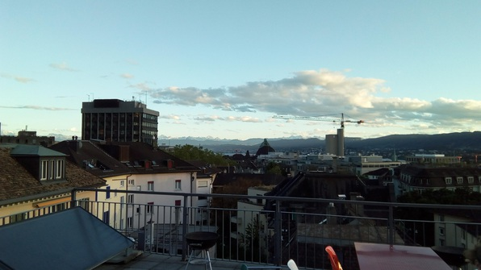

Woke up at 8 Uhr 45, tossed some water on my bleary face, and hauled downstairs. Made myself a cup of tea and a cup of muesli with plain yogurt and banana. Juyoung was ready to go to class, so I tossed back the tea and took the cup of muesli to go–with the result that I was able to enjoy my breakfast for the first time in a while!
Got to class at 9 Uhr 14 as usual. In class we worked more on time, with more review and practice of past topics. For the first break, I walked behind a building and found a lovely yard and some beautiful autumn leaves:
For my second break, after practicing with my group (Jenna, Chrissy and Karl) for the oral exam, I decided to just go to the Mensa by myself and read. After accidentally buying two non-free fancy breads, one of them a yellow sweet bread:
I carted my overflowing tray to a table, pulled out my book, and began to veg. Alas! My buddies found me anyway and plopped down alongside.
After the lunch break, we did a little more prep, then went and pwned the oral exam. We had to act out a scenario; we prepared for 3 and got the simplest one, which we performed with aplomb and a bit of humor, which I’d pushed for as a former voice acting student :) and which I think made our group bond a bit over making the scenario.
Then back to Culmann, where I read more Haskell. The examples of monad use were very engrossing and far from simple, so after reading the “Resource monad” thoroughly I tried to reconstruct it without looking at the sample code. I had to figure out some syntax stuff but it was fun!
After that, Daniel and Cody and I went out to order some pizza from the Domino’s 5 minutes away. We went to pick it up:
And then ate it on the roof!!

The views were absolutely stunning, and we had a fun conversation (Abi joined). Then I was off, with Gideon from Culmann, to play hoops at the Polyterrase student gym (the gym closest to our house). I sadly was having too much fun balling there to get any pics, but it was pretty fun! I got lots of play time. The players, from all over the world, were pretty good (lousy shooters though) and quite aggressive and energetic :D
And after that Gideon and I went to a Student Network event at a club across the river. The place was packed to the gills. After waiting in line, we finally ordered beers (7 Franken 50 each, no student discount as promised, learned later the discount was for shots :/) Then I wandered around a while, finding only a few people from my language class, but lots of random yokels who invited me into their conversation circles. Typically I’d talk with some such yokel for 10 minutes and then they would go find their friends :P So I finished my first beer and returned to Culmann.
There I found a new fellow, Alexei, from Paris. I reheated some pizza in the oven and ate it chatting; then got into a game of foosball with Alexei. He was quite good and I lost 6-10, but I think I’ll catch him soon :D
Daniel came in and we chatted for a bit. Then finally, Juyoung came in with some language class buddies; somehow I’d missed them at the rowdy club. The buddies were CS and Physics respectively, which was cool. We all went to the rooftop for a bit, along with Alexei. There was a lovely breeze and the cityscape was magnificent and my chilling training was working swimmingly; it was a beautiful end to the evening.
Finally, I descended to the WiFi zone and wrote this log. Now to bed before my last exam tomorrow!